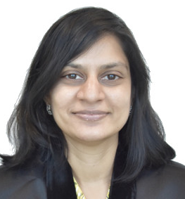
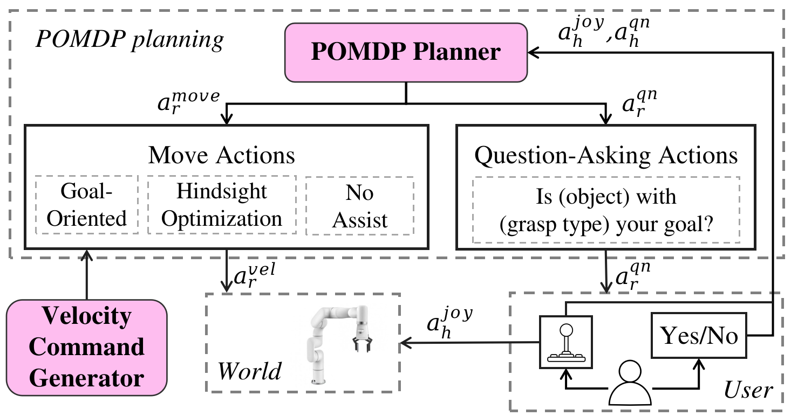
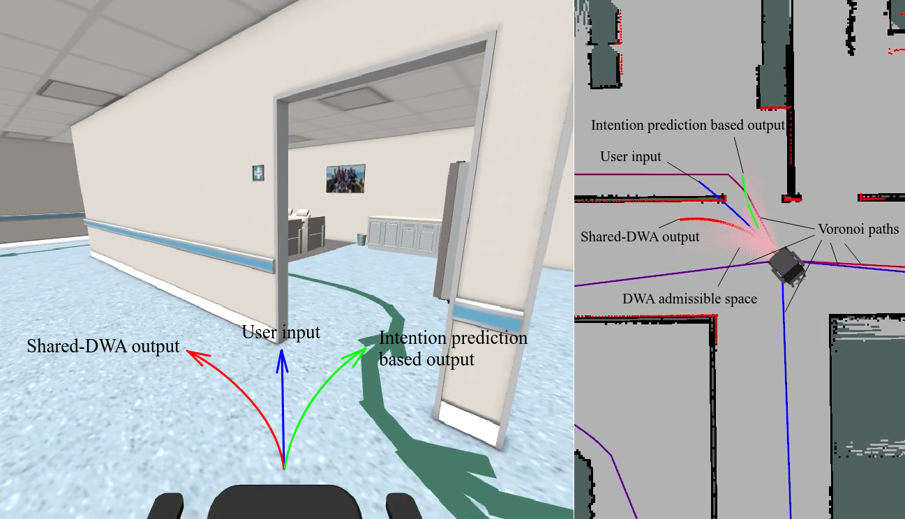
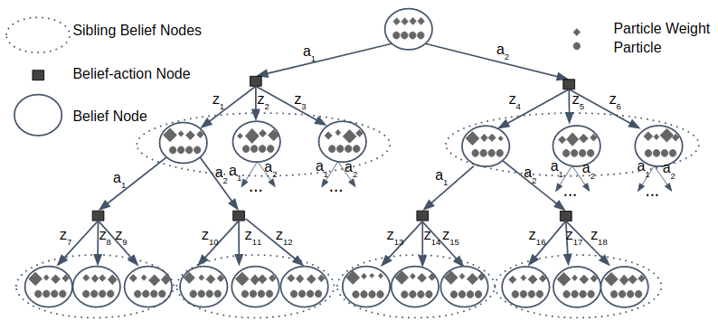
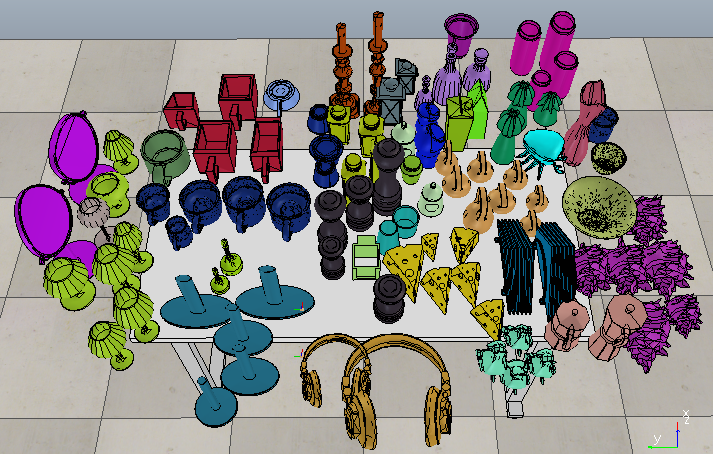

|
Neha Garg
I'm a research fellow at Rehabilitation Research Institute of Singapore (RRIS) at NTU, Singapore
, where I am working on human robot interaction algorithms for assitive robotic wheelchair and robotic arm.
I received my PhD degree from (NUS)
in 2020
during which I worked on autonomous grasping under uncertainty using POMDPs.
Prior to that, I worked as a Software Engineer at a computer vision startup Kooaba in Zurich, and a mobile software development company Affle in Singapore.
I received my B.Tech in Computer Science from IIT Delhi, India and Masters in Computer Science from EPFL, Switzerland.
My area of research lies at the intersection of planning under uncertainty, machine learning and human robot interaction.
I am interested in exploring how planning approaches can be combined with large vision language models to develop AI systems capable of reasoning in complex and dynamic environments.
.
Email /
CV /
Bio /
Google Scholar /
Github
|

|
|

|
Shared Autonomy of a Robotic Manipulator for Grasping under Human Intent Uncertainty using POMDPs
J-Anne Yow,
Neha P Garg,
Wei Tech Ang
IEEE Transanctions on robotics (T-RO) , 2023
paper link
/
video
Introducing active information gathering in shared autonomy in a principled manner by modelling it as a discrete action partially observable Markov decision process (POMDP), reasoning over high-level actions.
|
|

|
An intention prediction-based shared control system for point-to-point
navigation of a robotic wheelchair
Zhen Lei,
Bang Yi Tan,
Neha P Garg,
Lei Li,
Ananda Sidarta,
Wei Tech Ang
IEEE Robotics and Automation Letters (RAL) , 2022
paper link
/
video
Assist in avoiding obstacles and moving in desired direction even with imprecise control input.
|
|

|
Despot-alpha: Online pomdp planning with large state and
observation spaces
Neha P Garg,
David Hsu,
Wee Sun Lee
Robot Science and Systems (RSS) , 2019
pdf
/
code
Online POMDP solver for large state and observation spaces by making use of weighted particles and alpha vectors inside a determinized forward search tree.
|
|

|
Learning to grasp under uncertainty using pomdps
Neha P Garg,
David Hsu,
Wee Sun Lee
Internation Conference on Robotics and Automation (ICRA) , 2019
paper link
/
code
/
video
Autonomous grasping under uncertainty using touch and vision feedback by learning from a POMDP policy.
|
|
{kind=link}